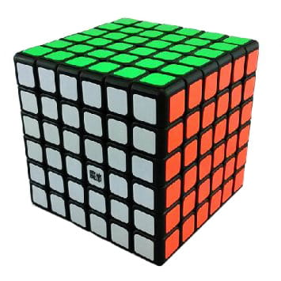

Kostka 6x6x6
Strona Główna
Opis kostki
Kostka 6x6x6 jest pierwszą kostką wydaną przez markę V-cube, która jako pierwsza wykupiła patent na zabawkę i zaczęła tworzyć kostki o nieco innym, zaokrąglonym kształcie. Ta budowa pozwoliła im również na stworzenie kostek o większych rozmiarach, rozszerzając zakres oficjalnych kostek do rozmiaru 7x7x7.

Tabela rekordów świata
1
Max Park
1:09.51
2
Kevin Hays
1:14.06
3
Feliks Zemdegs
1:18.28
4
Ciarán Beahan
1:19.70
5
Brandon Nunez
1:21.67